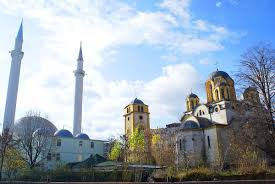

Prishtina
The vibrant capital city , full of life , culture and history
Prizren
A picturesque city known for its old town , mosques and fortress views
Gjakova
Famous for its old bazaar and rich cultural heritage
Peja
Gateway to the Rugova Mountains , perfect for nature lovers and adventures
Gjilan
A lively city in eastern Kosovo , famous for its parks and hospitality
Brezovica
Kosovo's most popular ski resort , nestled in the Sharr Mountains
Mitrovica
A city of bridges and rivers , with a unique m7ulticultural vibe
Istog
The municipality of Istog has an ethnic Kosovo Albanian majority
Decan
Home to the UNESCO-listed Visoki Deqani Monastery and beautiful nature

Ferizaj
Known for its unique mosque and church side by side and vibrant city life